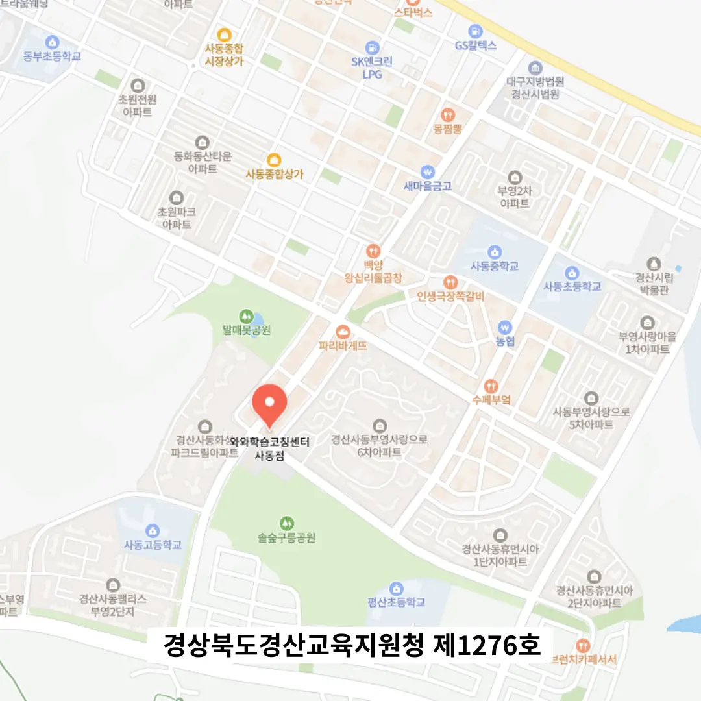

학부모님께서는 아이의 학습 목표와 현재 수준을 먼저 점검하시는 것이 중요해요. 선생님들은 교과 과정과 연계된 실전 문제 제공 여부를 살펴보시면 도움이 돼요. 학생들은 직접 체험 수업에 참여해 강사의 설명 방식과 피드백 속도를 확인해 보세요. 교육기관은 학년별 맞춤 커리큘럼과 주말 보강 수업 운영 여부를 비교해 보는 것이 현명해요. 지역사회는 사동 중1 영어학원 주변 교통 편의와 안전 시설을 체크하면 선택에 큰 도움이 돼요. 사동은 주거 밀집도가 높아 학부모 모임을 통해 현장 후기 정보를 쉽게 얻을 수 있어요. 사동 중1 영어학원 선택 시 계약서의 환불 조항과 수업 취소 정책을 꼼꼼히 읽어보시면 추후 분쟁을 예방할 수 있어요. 부모님은 아이의 학습 습관 변화를 기록하고 정기적으로 상담 일정을 잡아 진행 상황을 점검해 보세요.
주거 환경이 조용하고 학군이 우수해 학습 집중도가 높은 지역이에요. 초등 저학년은 기초 개념 이해와 놀이 기반 학습이 효과적이며, 고학년은 심화 문제 풀이와 자기주도 전략이 필요해요. 중학생은 교과 연계 서술형 답변 훈련이 핵심이고, 고등학생은 입시 전문 개별 지도가 요구돼요. 전체 학년은 수업 시작과 종료 시 명확한 목표 설정이 학습 효율을 높여요.
와와학습코칭센터는 자기 점검 체크리스트를 기반으로 한 맞춤형 수업을 제공해요. 초등학생은 영어 기본기를 다지는 과정을 체계적으로 설계하고, 중학생은 심화 독해와 문법 응용을 중점적으로 다뤄요. 수강료는 초등영어 250,000원, 중등영어 300,000원으로 책정돼 있어 가성비가 뛰어나요. 강사는 현장 경험이 풍부한 전문가들로 구성돼 학생 개별 상황에 맞춰 피드백을 즉시 제공해요. 학부모와의 상담 시간도 정기적으로 마련해 학습 진행 상황을 투명하게 공유해요. 이러한 체계적인 운영 덕분에 학습 효과가 눈에 띄게 향상된답니다.
| 학원명 | 와와학습코칭센터 |
| 수강료 | 초등영어 250,000원 | 중등영어 300,000원 |
CURRICULUM
수업은 실시간 오답 정리판을 활용해 즉시 오류를 짚어주고, 교재는 교육부 승인 교재와 자체 제작 교재를 병행해 학습 목표와 일치하도록 설계돼요. 초등 6학년을 대상으로는 기본 개념 이해와 문제 풀이에 집중하면서, 실수 검토 단계에서도 충분히 피드백을 제공해요. 중학생 이상은 심화 문제와 실전 모의고사를 교차 배치해 시험 대비 능력을 높이며, 매주 진행되는 복습 시간에 이전 내용 정리를 강조해요. 또한, 학생마다 학습 스타일을 분석해 맞춤형 과제를 부여해 자기주도 학습을 촉진해요.
학생은 사동 중1 영어학원 선택 단계에서 목표와 학습 스타일을 명확히 정의하지 않으면 효율이 떨어진다는 점을 자주 겪어요. 부모님은 하루 공부 목표를 체크하고 기록하는 습관을 길러야 하지만, 이를 놓치면 진행 상황 파악이 어려워요. 등록 후에는 과도한 학습량으로 인해 동기 부여가 감소하고, 관리 단계에서는 오답 노트를 체계적으로 정리하지 않아 복습 효과가 감소하는 경우가 많아요. 사동은 다양한 사동 중1 영어학원 옵션이 있어 비교 검토가 쉬우니, 신중한 선택과 꾸준한 관리가 필요해요.
사동 중1 영어학원은 성적 편차를 개인 차가 아닌 전략 차로 해석하고, 입학 전 진단 평가와 상담을 통해 맞춤형 로드맵을 제시해요. 목적지부터 안내하는 친절한 수업 구조가 특징이며, 개념 요약 말하기 훈련을 통해 이해도를 높여요. 또한 수업 자료를 자율 복습 여부를 확인해 학습 지속성을 확보해요. 이러한 전략은 학생 스스로 공부 습관을 형성하도록 돕는 데 초점을 맞추고 있어요.
초등학교 6학년 학생은 문제 풀이에 집중하지만 실수 검토가 부족해요. 무조건 외우는 경향이 강해 흐름을 놓치는 경우가 많아요. 이 사동 중1 영어학원은 체계적인 복습과 오답 노트를 활용해 실수를 최소화하고, 개념 이해를 돕는 교육 방식을 제공해요. 따라서 이런 유형의 학생에게 적합해요.
학습을 시작하고 나서 스스로 목표를 설정하고 달성하는 과정이 재미있다고 느꼈어요. 선생님이 질문을 통해 생각을 이끌어 주셔서 공부가 더 깊어졌어요. 교실 분위기가 활기차고 동료와 함께 공부하는 시간이 즐거웠어요. 일정표가 구체적이라 매일 해야 할 일이 명확했어요. 전체적으로 학습 효율이 눈에 띄게 올라갔어요. 이런 경험을 바탕으로 다른 학부모에게도 추천하고 싶어요. 수업 중에 제공되는 즉각적인 피드백이 학습 효율을 높여요. 또한, 사동 중1 영어학원에서 제공하는 학습 자료가 다양해 스스로 탐구하는 즐거움을 느낄 수 있어요.